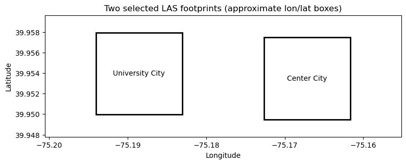

Week 11B: LAS → DSM in Center City and University City
Download two Philadelphia LAS tiles, use PDAL to turn each into a digital surface model (DSM), and visualize the resulting GeoTIFF rasters. These are small case-study footprints, not complete neighborhood coverage or a citywide analysis.
A DSM records surface elevation, including roofs, trees, and ground. It is different from a bare-earth DTM and from building height above ground.
1. Keep using geospatial
Do not create another environment. Select your existing geospatial notebook kernel. This notebook uses pdal, rasterio, pyproj, numpy, pandas, matplotlib, and requests; all are already installed in the instructor’s checked geospatial environment. No new modules are needed there. We read LAS metadata through PDAL, so laspy is not required.
If any are missing from your own environment, install only those packages into the existing environment. The conda package for import pdal is python-pdal:
conda activate geospatial# Only if missing:conda install -n geospatial -c conda-forge python-pdal rasterio pyproj numpy pandas matplotlib requests
Run the notebook from this lab directory or from the course repository root. Raw LAS downloads are kept in a cache outside the website. Set MUSA550_CACHE to change that location. The two files total about 2.09 GB; ensure sufficient disk space and allow time for the first download.
from pathlib import Pathimport jsonimport mathimport osimport sysimport pdalimport rasteriofrom rasterio.plot import showfrom pyproj import CRS, Transformerimport numpy as npimport pandas as pdimport matplotlib.pyplot as pltfrom matplotlib.colors import Normalizefrom matplotlib.patches import Rectangleimport requestsLAB = Path.cwd()ifnot (LAB /"lecture-11B.ipynb").exists(): LAB = LAB /"public/labs/week11-large-data-viz-lidar"assert (LAB /"lecture-11B.ipynb").exists(), "Run from the lab directory or repository root."CACHE = Path(os.environ.get("MUSA550_CACHE", Path.home() /".cache/musa550-week11"))RAW = CACHE /"raw"OUT = LAB /"outputs/lidar/case_studies"RAW.mkdir(parents=True, exist_ok=True)OUT.mkdir(parents=True, exist_ok=True)print("Python:", sys.executable)print("PDAL:", pdal.__version__)print("Raw LAS cache:", RAW)
Python: /opt/anaconda3/envs/geospatial/bin/python
PDAL: 3.5.3
Raw LAS cache: /tmp/week11-lidar-raw
2. Choose two neighborhood examples
The PASDA provider tile index identifies the following 3,000 × 3,000 US-survey-foot footprints (about 914 × 914 m). We selected them using the provider polygons, not file-number guesses.
University City:Philadelphia_394.las, an eastern University City / campus-area example.
Center City:Philadelphia_456.las, a central downtown example near City Hall.
These are teaching footprints rather than official neighborhood boundaries. The 2022 directory is a distribution label; it does not establish the acquisition date. Only these two LAS files are downloaded from the classified LAS directory.
# Show the selected footprints in longitude/latitude before downloading.to_lonlat = Transformer.from_crs("EPSG:6565", "EPSG:4326", always_xy=True)fig, ax = plt.subplots(figsize=(9, 4))for case in cases: left, bottom, right, top = case["bounds"] west, south = to_lonlat.transform(left, bottom) east, north = to_lonlat.transform(right, top) ax.add_patch(Rectangle((west, south), east-west, north-south, fill=False, linewidth=2)) ax.text((west+east)/2, (south+north)/2, case["zone"], ha="center", va="center")ax.autoscale_view()ax.margins(0.2)ax.set(xlabel="Longitude", ylabel="Latitude", title="Two selected LAS footprints (approximate lon/lat boxes)")ax.set_aspect(1/ np.cos(np.deg2rad(39.95)))plt.show()

Download LAS files with Python
Stream each response to disk instead of loading a gigabyte into memory. Write a temporary .part file, check the provider’s byte size, then rename it. Reruns reuse complete cached files. A failed download can be rerun; this example restarts the incomplete file.
def download_las(case): destination = RAW / case["name"]if destination.exists() and destination.stat().st_size == case["bytes"]:print("Using cached:", destination.name)return destination temporary = destination.with_suffix(".las.part")print("Downloading:", case["name"])with requests.get(BASE_URL + case["name"], stream=True, timeout=(30, 180)) as response: response.raise_for_status()with temporary.open("wb") as stream:for chunk in response.iter_content(chunk_size=8*1024*1024):if chunk: stream.write(chunk)if temporary.stat().st_size != case["bytes"]:raiseValueError(f"Unexpected download size: {temporary}. Check the provider and retry.") temporary.replace(destination)return destinationlas_paths = [download_las(case) for case in cases]
Using cached: Philadelphia_394.las
Using cached: Philadelphia_456.las
3. Read CRS and elevation units with PDAL
quickinfo reads the LAS header without loading the whole point cloud. These provider files use a compound CRS: horizontal Pennsylvania South coordinates and a vertical height reference. Read the actual CRS rather than assigning latitude/longitude.
We retain native horizontal coordinates, convert elevations to meters using the vertical CRS, and choose a 1 m pixel converted to native XY units. Unit conversion does not change the vertical datum.
The visible pipeline reads one LAS file, keeps first returns, excludes low/high noise (classes 7/18) and withheld points, converts Z to meters, and writes maximum elevation per pixel to a Float32 GeoTIFF.
binmode=True uses only points inside each cell; window_size=0 leaves gaps unfilled. NoData is −9999, not zero. This simple first-return maximum is an instructional DSM: remaining outliers can affect roofs and canopy peaks. It is not a ground-only elevation model.
Each writer is restricted to its selected tile footprint. Sequential streaming avoids holding all points from both files in memory, although the raster accumulator still requires memory. We save the pipeline JSON beside each raster for inspection. See the PDAL GDAL writer documentation.
University City → Philadelphia_394_dsm.tif | retained points: 32245232
Center City → Philadelphia_456_dsm.tif | retained points: 29144620
5. Inspect and visualize the DSM rasters
Check the pixel size, CRS, valid coverage, and elevation range. A masked cell means no retained return was observed there. Elevations are referenced to the source vertical datum; they are not building heights.
The two plots use a shared color scale based on the combined 2nd–98th percentiles to reveal detail. This clips only the display colors; the GeoTIFF retains every measured elevation.
Change CELL_SIZE_M to 2 and rerun the pipeline and plots. How do gaps and roof detail change?
Inspect the tallest pixels: could a maximum represent a tree, roof, or outlier?
Explain why these elevations cannot be interpreted as building heights without a matching terrain model.
Outputs: two DSM GeoTIFFs, two pipeline JSON files, and a comparison figure in outputs/lidar/case_studies/. Raw LAS files remain in the cache. We stop at raster visualization; neither a citywide mosaic nor web-map tiles are needed for this example.